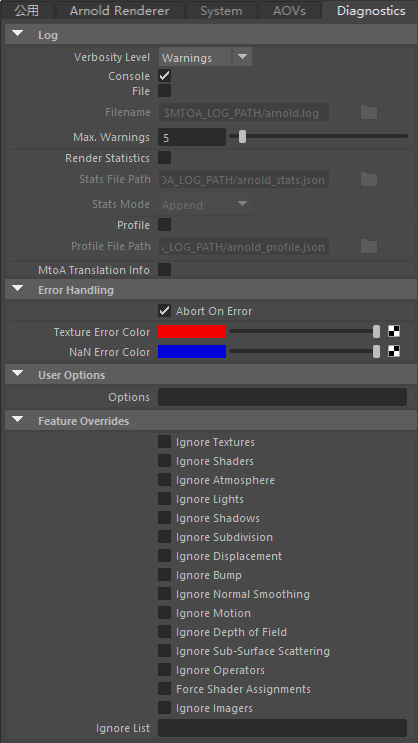
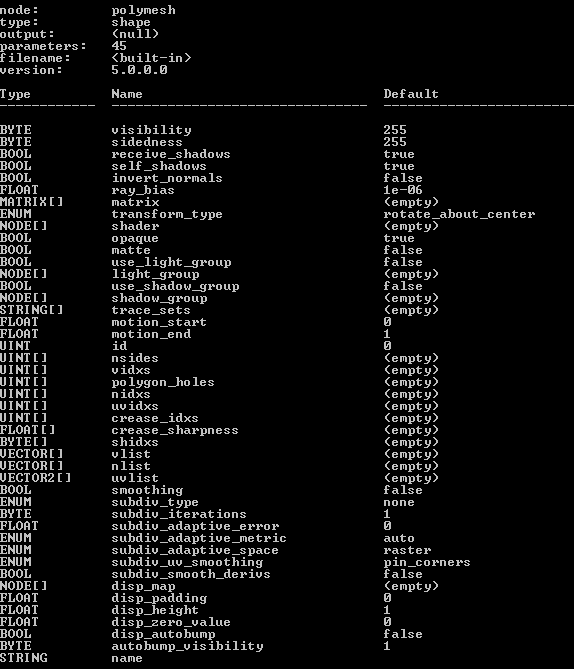

| 延伸阅读 |
|---|
| 请参见《Arnold 用户手册》中的渲染设置 |

这些设置将帮助您对 Arnold 渲染进行监视、故障排除和优化。
Arnold 可以生成日志来报告渲染图像所需的所有步骤，以及渲染器遇到的任何警告和错误。此日志还提供详细的统计信息，这些信息对于调试、优化和衡量渲染非常有用。
指定日志消息中的信息量，其中，“警告”(Warnings)的信息量最少，“调试”(Debug)的信息量最多：
在 Maya 的输出窗口中显示日志（在 Windows 上）。在 OSX 或 Linux 上，如果从终端窗口启动 Maya，则日志将输出到该终端窗口（或者，单击“文件”(File)复选框将日志输出到文件）。
在 Windows 上，如果使用 Windows 的“开始”菜单启动 Maya，您可能无法在输出窗口中看到 Arnold 日志。如果发生这种情况，您可以从命令行启动 Maya（然后 Arnold 日志将显示在输出窗口中），也可以启用文件日志记录。
如果启用，将在指定文件中写入日志。
指定 Arnold 日志文件的输出路径。可以使用环境变量。可以在文件名中使用填充符号 ()。
限制发送到日志的警告消息（具有相似类型）数量。
在 IPR 更新等期间转储来自 MtoA 的调试消息
加载 MtoA 插件时，可以使用 Maya 环境变量来控制日志详细级别。要执行此操作，您必须将以下文本添加到 Maya.env 文件中。例如：
MTOA_STARTUP_LOG_VERBOSITY = 3
此日志记录有 4 个级别：
0 无。
1 警告和错误。
2 警告、错误和信息（注册的扩展数、创建的着色器节点数、加载的插件）。
3 所有信息。
请注意，必须先通过命令行或批处理文件运行 Maya，才能在 Maya 的输出窗口 (Windows) 或控制台 (Linux) 中查看日志。
一组范围广泛的工具，可以更轻松地确定性能问题并优化渲染过程。按节点和类别组织的其他计时统计信息可以输出到 JSON 文件。这样，您便可以知道哪些对象的渲染成本最高以及哪些渲染器所需的时间最长。此外，它还可用于详细配置可视化，方法是将跟踪信息输出到文件（例如“my_profile.json”），调用 AiProfileSetFileName("my_profile.json") 或 kick -profile "my_profile.json"，然后将 JSON 文件加载到 Google Chrome Web 浏览器“chrome://tracing/”或 https://www.speedscope.app/ 中。
为统计信息文件中收集的每个渲染过程创建一个 JSON 对象，并使文件中每个过程的编号递增（“render 0000”、“render 0001”等）。因此，如果采用附加模式，编号最大的渲染组将为最新组。否则，如果使用覆盖模式，将仅包含一个具有最新通道的对象。
创建文件名并选择“附加”(append)或“覆盖”(overwrite)模式。
可以启用配置，而且可以设置文件名。
如果设置此项，一检测到错误就会停止渲染。这是推荐设置。通常，您不应忽略重要的错误消息，否则将面临崩溃、渲染瑕疵以及未定义行为的风险。
用于报告纹理错误的颜色。
用于报告 NaN 错误的颜色。
包含错误网格的场景将渲染为绿色。包含错误着色器的场景将渲染为洋红色。
这是一个由字符串构成的通用特性。此字符串字段可以设置为覆盖 Arnold 核心节点的任何参数。例如，这允许您访问和设置当前未在用户界面中显示的 Arnold 核心参数。该特性可应用于多边形网格、头发和灯光。
这是一个功能强大的选项，使用时务必要小心。字符串会直接传递给 Arnold 节点，因此用户需要完全理解所设置的参数。
例如，如果渲染的清晰度至关重要，可以将 texture_max_sharpen 设置为 1.5。另一个示例是，要禁用稀疏纹理，可以将 options.gpu_sparse_textures 设置为 0。
您可以使用 kick 查询 Arnold 核心节点的参数列表。例如，可以通过以下方式获取多边形网格节点的属性名称：
kick -info polymesh
请始终引用核心 Arnold 节点（参见页面底部），而非 Arnold 插件中显示的参数名称。
如果要在 user_options 字符串中设置多个 Arnold 参数，则可以像在实际 ASS 文件中那样使用任何空白（空格、制表符、换行符（例如 \n））进行分隔。

获得“kick -info polymesh”参数
此开关组可用来禁用一系列重要的渲染功能。通过有选择地禁用某些功能，您可以了解到渲染器将大多数时间花在哪里，从而有助于优化场景。例如，启用 ignore_textures 或 ignore_shaders 可以提高照明或外观开发速度。这也有助于在调试时隔离错误和瑕疵。请注意，这些选项并非都是交互式选项，部分选项可能需要刷新/导出整个场景。
强制 MtoA 导出带有着色器链接的形状节点。这允许您将形状和着色器保存在单独的 ASS 文件中。例如，您可以用一个替代对象加载形状，用另一个替代对象加载着色器。只要形状节点包含指向着色器的链接，Arnold 就会解析链接并使用正确的着色器渲染形状。